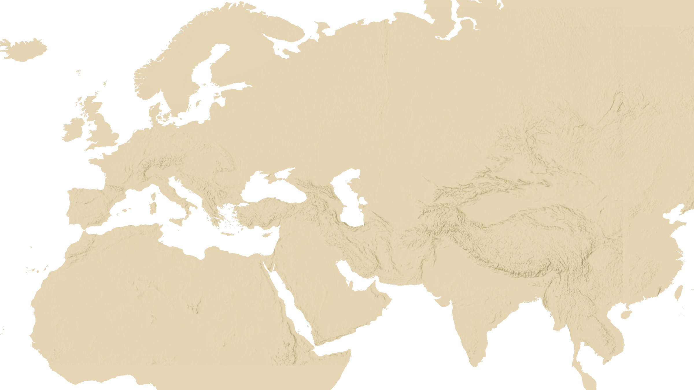
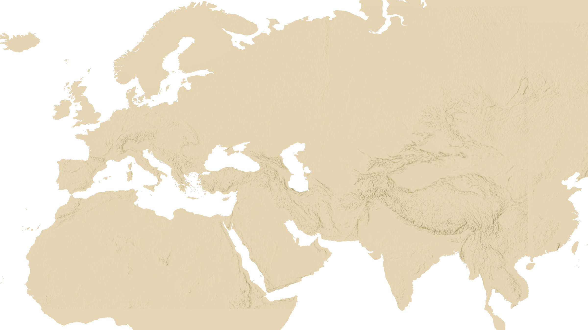

THE ORIGINS
OF MAZE
The story of maize and mankind began ten thousand years ago in the Americas. Maize was the common thread guiding the evolution of Mesoamerican and Andean civilizations
 and the new social and economic orders that distinguished them. The introduction of maize and agriculture by pre-hispanic groups left a lasting mark on religion, mathematics, astronomy, architecture, art and agriculture. It is hard to imagine the progress of these cultures without this important plant that became the center of agriculture on the continent. Today maize, along with wheat and rice, is one of the three most widely cultivated grains in the world. It links future generations around the world to the innovation of pre-hispanic farmers.
and the new social and economic orders that distinguished them. The introduction of maize and agriculture by pre-hispanic groups left a lasting mark on religion, mathematics, astronomy, architecture, art and agriculture. It is hard to imagine the progress of these cultures without this important plant that became the center of agriculture on the continent. Today maize, along with wheat and rice, is one of the three most widely cultivated grains in the world. It links future generations around the world to the innovation of pre-hispanic farmers.
and the new social and economic orders that distinguished them. The introduction of maize and agriculture by pre-hispanic groups left a lasting mark on religion, mathematics, astronomy, architecture, art and agriculture. It is hard to imagine the progress of these cultures without this important plant that became the center of agriculture on the continent. Today maize, along with wheat and rice, is one of the three most widely cultivated grains in the world. It links future generations around the world to the innovation of pre-hispanic farmers.


 
